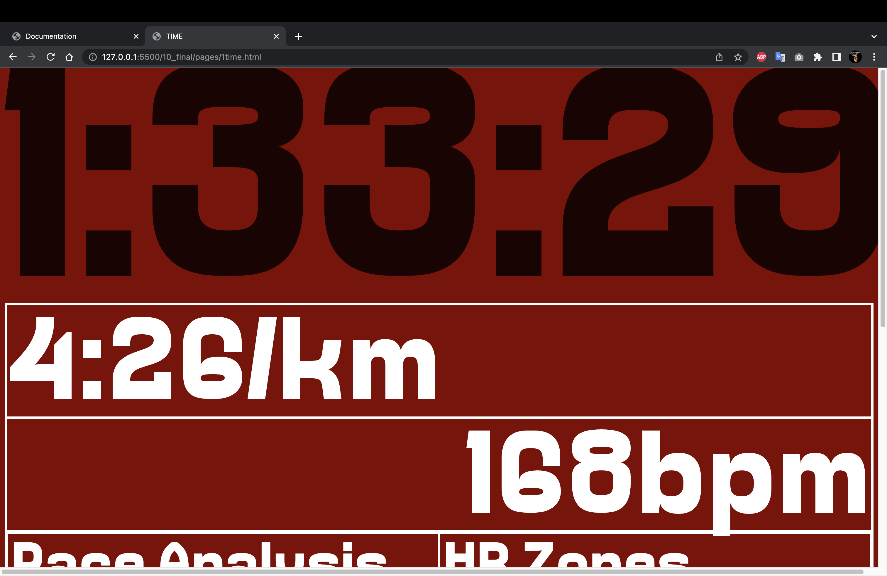
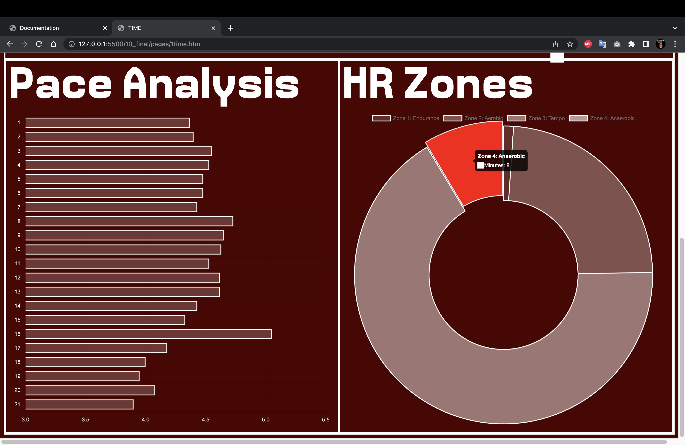
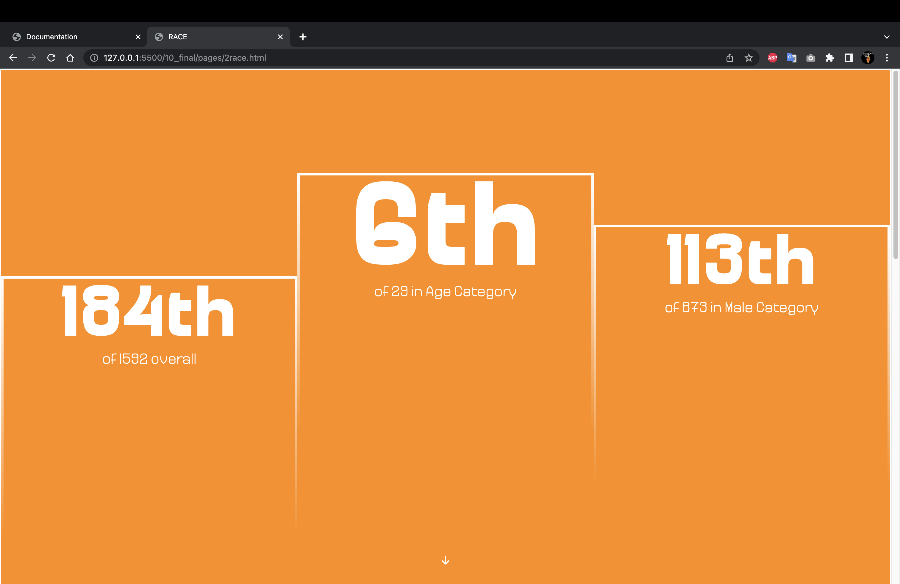
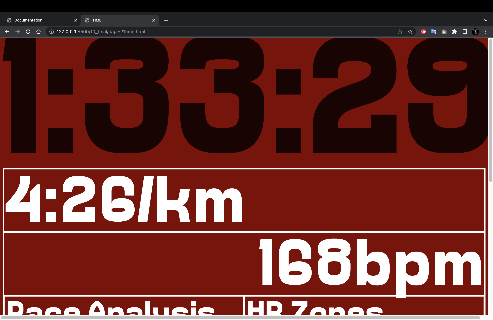
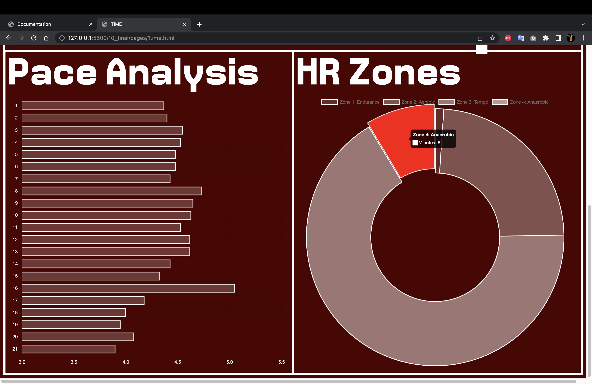
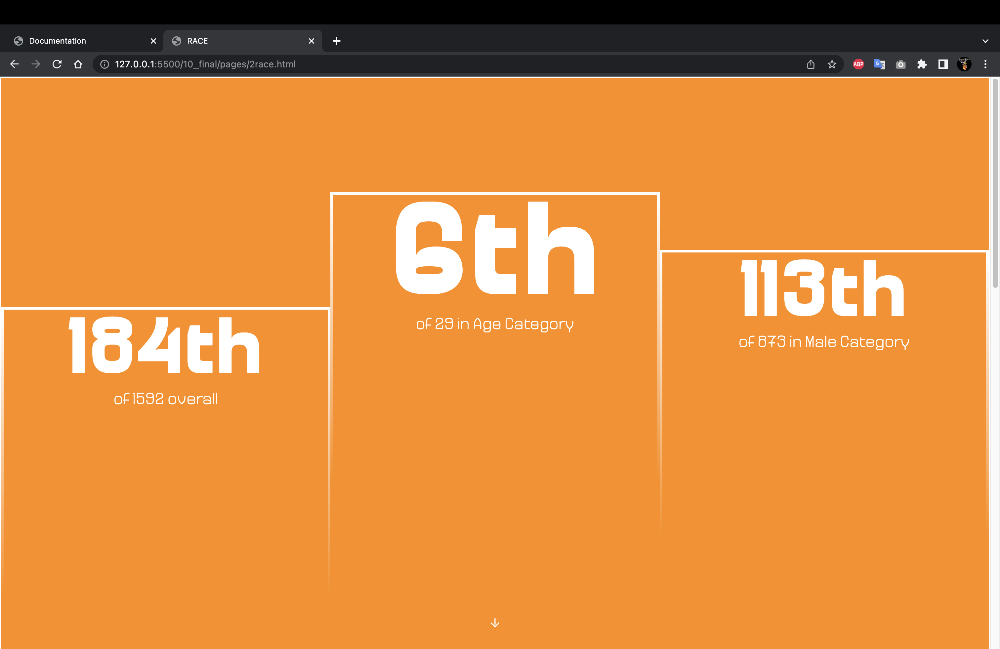

An endurance sport related website. Either something for/about a certain race, a club page, or a more personal mix of things.
https://www.nytimes.com/2022/11/06/sports/new-york-marathon-fashion.html https://www.instagram.com/nyurunclub/ https://www.paris2024.org/en/paris-2024-club/ https://www.paris2024.org/en/paris-2024-marathon/ https://www.worldmarathonmajors.com/ https://www.ironman.com/ https://www.nyrr.org/tcsnycmarathon https://www.bmw-berlin-marathon.com/en/ https://www.strava.com/dashboard
After presenting the idea in the initial pitch, one of the main feedbacks was to include personal material and relate it to a race like the Brooklyn Half which was happening that weekend.
Given that I was leaning to a journal/blog direction, I thought making some form of memorabilia for a race would be really fun as well as being something that would have realy demand for runners who take these races as big challenges and achievements.
The idea evolved into some sort of individualized spotifty wrapped for the BK half, which I started to make my wireframe on.
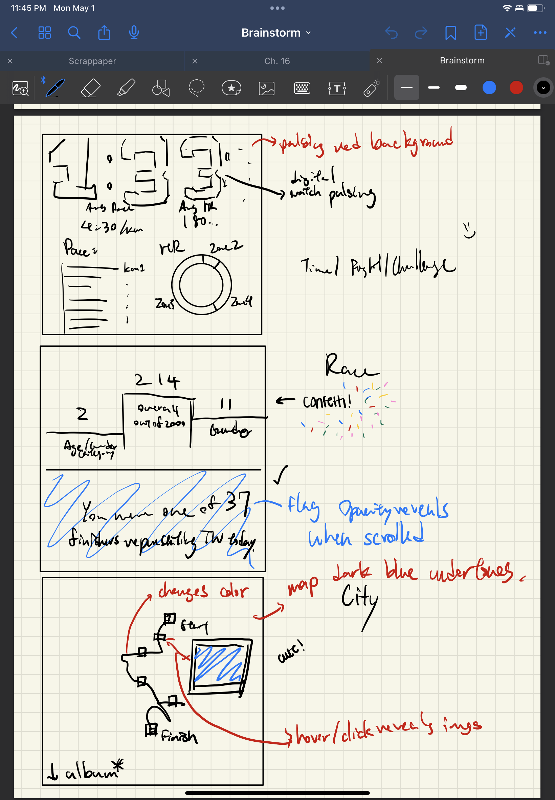 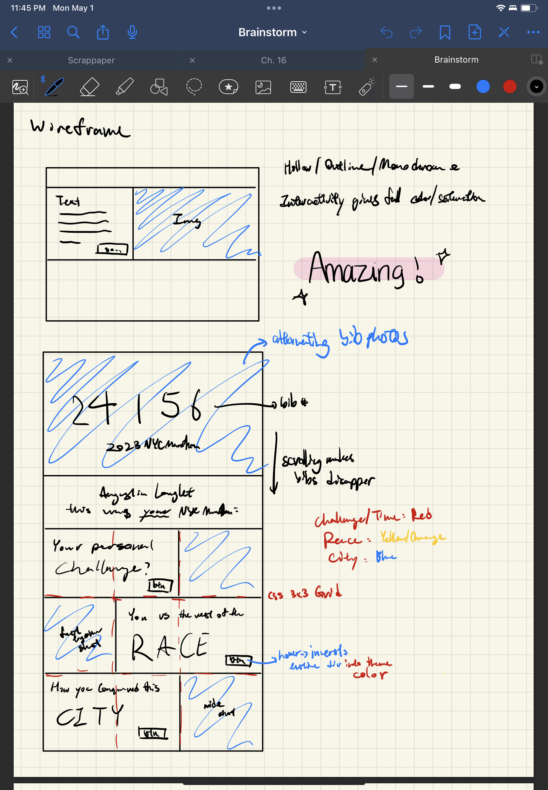 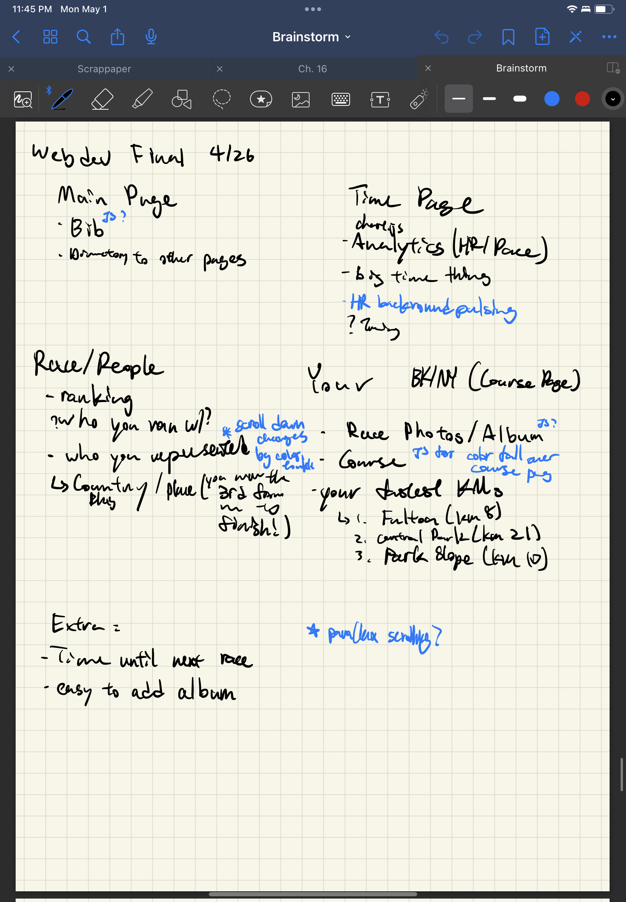After user testing, the main takeaway was to make the experience more interactive and responsive to user input/feedback. Taking that into account, I decided to seperate the pages to give the experience more of a progression as well as adding complexity to the dynamic and interactive areas of the site [animations, bib, image buttons, course colors]
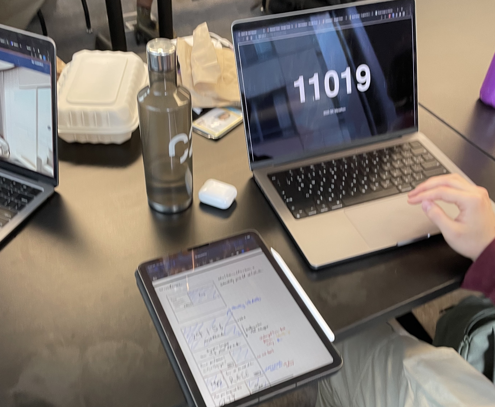
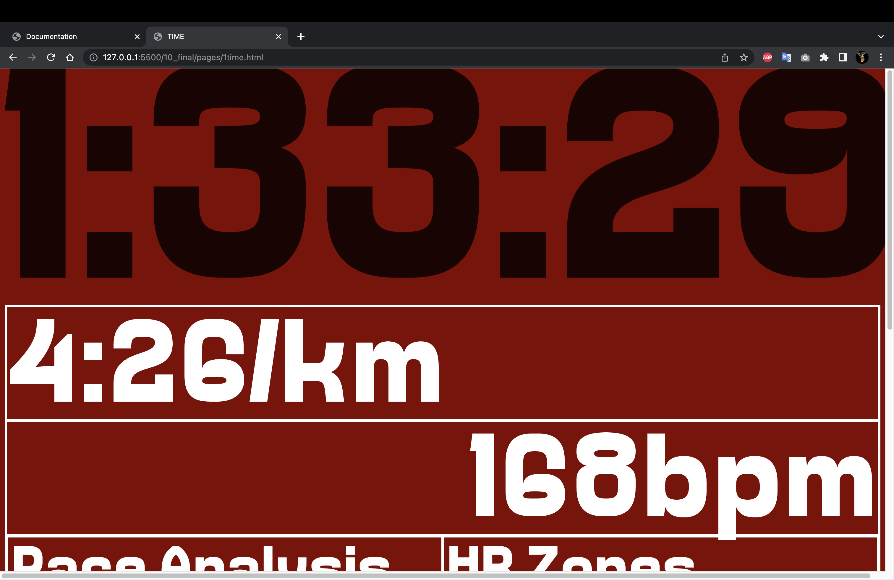
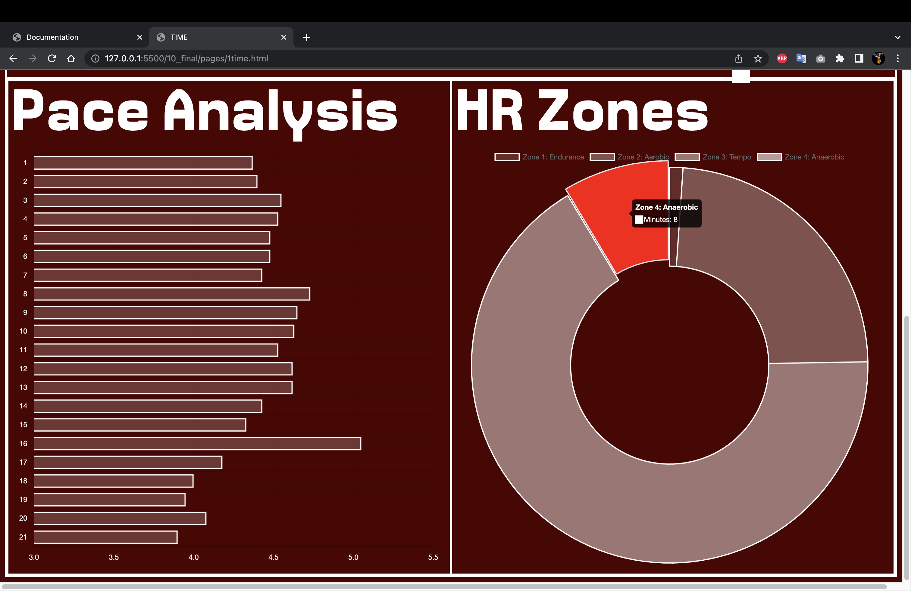
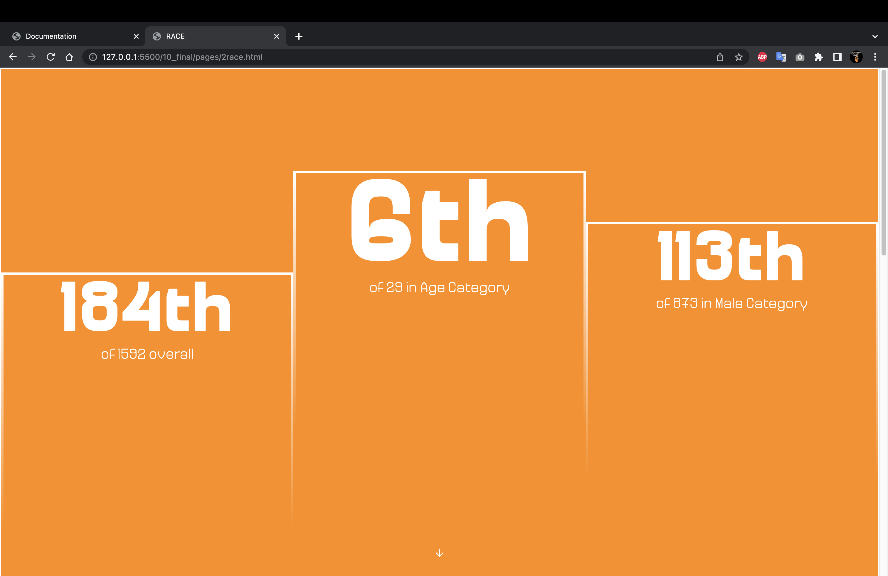